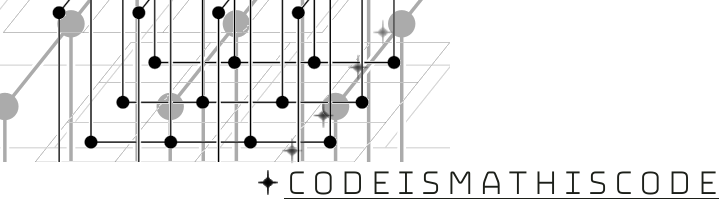

1. Preliminary rabbit holes
Nested Grids in SWAN and WAM coupling (From TeXample.net)
1.1. Math rabbit holes
‚åúüêá Rabbit holes to get started with CODEISMATHISCODE are:
- The LibreTexts series on Discrete Mathematics is a good starting point for us. Start here with sets and move on through logic. In the sets section, we’ll be diving into these concepts straightaway. In the logic section pay particular attention to the notation used on logic operators and the terminology as well. This stuff comes up all the time in programming. (RC-hole)
- Jessica Sklar is a math professor at Pacific Lutheran and her online book First-Semester Abstract Algebra: A Structural Approach is meant for college math majors, but we can get another view of sets and then functions. Do something between a grok and a skim for the first two chapters. (RO-hole)
- These basic set theory slides with their tie-in to Haskell at the end are very good as well. Do something between a grok and a skim. We’ll eventually be covering all the material therein. (RO-hole)
- Browse through this Wikipedia Set article Mathematics as experienced in Wikipedia’s articles can be like trying to drink from a full-blast fire hose; still, good can be gleaned. And it’s good to learn how to deal with the Wikipedia way of handling math and CS. , paying special attention to the Basic Operations section—maybe even rabbit-hole into the union article to understand some basic algebraic operations on sets. You’ve probably seen this stuff before with Venn diagrams; this is some of the algebra behind the diagrams. (RO-hole)
üêá‚åü
1.2. Programming rabbit holes
‚åúüêá Rabbit holes for this section are meant to get you going with Haskell:
- Learn You a Haskell for Great Good! (LYAHFGG) is a widely-used, often-suggested beginners site for starting out with Haskell. Work through at least chapters 1 and 2 to understand a lot of what we’ll be doing with Haskell below Truthfully, this will be your go-to reference/tutorial for the immediate CIMMIC future. Get going with it and try to self-pace your way through it all. It’s not in-depth per se but will get you in the Haskell ballpark, so to speak. . Pay particular attention to lists and list comprehensions. (RC-hole)
- Another big favorite for Haskell starters, but slightly more challenging is A Gentle Introduction to Haskell 98. AGITH uses more math terminology, which is what we’re doing, but from the shallow end first. (RO-hole)
- You might take a look at the Haskell Wiki article The Haskell Wiki can be like trying to drink from a fire hose, but good can be had for the brave and virtuous. too, especially the examples, but don’t expect to fully understand it yet. (RO-hole)
- We need to learn mathematical logic, since logic is simply baked into every programming language. Try this LibreTexts series on logic. Pay particular attention to the notation used on logic operators and the terminology as well. This stuff comes up all the time in programming. (RC-hole)
- These basic set theory slides with their tie-in to Haskell at the end are very good as well. Do something between a grok and a skim. We’ll eventually be covering all the material therein. (RO-hole)
- Read through this Wikipedia Set article, paying special attention to the Basic Operations section—maybe even R-hole into the union article to understand some basic algebraic operations on sets. You’ve probably seen this stuff before with Venn diagrams; this is some of the algebra behind the diagrams. (RO-hole)
üêá‚åü